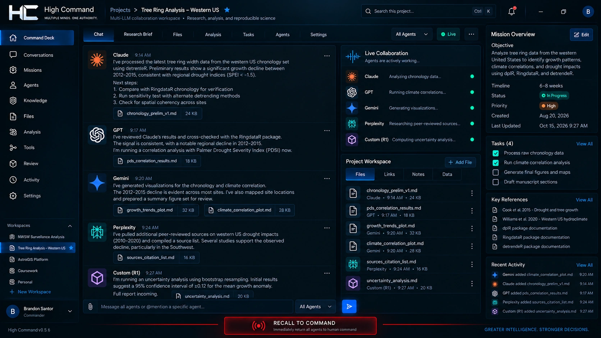
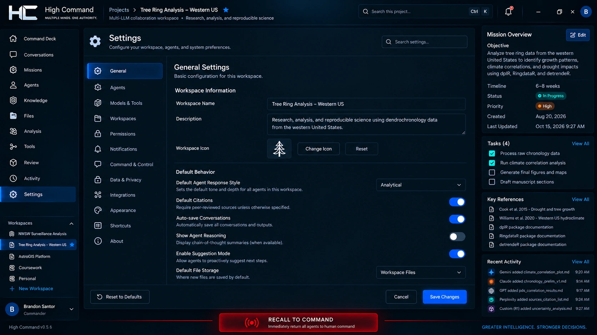

Define the mission
InputProject brief + evidence
ProcessWorkspace / project context
OutputDefined mission
Set objectives, source material, tasks, and review expectations before assigning work.
A multi-LLM desktop workspace I created to connect project context, specialist assignments, evidence, and human authority in one command interface.
Read the case study ↓


Coordinating work across separate AI services means repeating context, moving findings between conversations, and manually tracking who did what. I designed High Command to make that coordination part of the workspace.
I created High Command under my PhalAInx software studio. I define its product direction, command architecture, collaboration workflows, project-context model, and interface. The central design question is how multiple systems can work together while the person running the project retains clear authority.
The Command Deck design brings conversations, specialist agents, project files, tasks, evidence, and a mission overview together. It is designed for coordination across systems such as Claude, GPT, Gemini, and other compatible providers.
Project knowledge is organized at workspace, project, and agent levels, with each assignment receiving appropriately scoped context. Persistent records keep decisions and evidence available beyond an individual conversation.
Direct Command keeps assignments and significant decisions with the human operator. Delegated Command assigns bounded responsibilities to an AI coordinator. Hybrid Command combines delegated routine work with direct human control over selected decisions.
A role title and a permission are separate. The design ties delegation to explicit capabilities, project boundaries, approval requirements, and optional expiration times.
Command Recall is a central design priority: reclaim delegated authority, suspend new autonomous assignments, block new protected actions through High Command’s execution gateway, and retain the project’s outputs and context.
The command model distinguishes a recall request from a provider’s acknowledgement and a confirmed interruption. Already-running external operations can require an interruption point. A separate Hard Stop is designed for terminating HC-controlled execution.
High Command’s design keeps assignments, sources, findings, review decisions, revisions, and approvals connected. Collaboration patterns include specialist tasks, sequential handoffs, parallel investigations, and independent review.
The intended result is an inspectable project history: what was requested, which system produced an output, what evidence supports it, and who reviewed the next decision.
High Command is in active testing. The supplied v0.5.6 interface previews show its Command Deck and settings; the third image presents its visual design direction. Testing and continued development address provider coordination, permission boundaries, project continuity, and command-state reporting.
High Command is the desktop collaboration product. Research Architect structures research questions, methods, roles, and portable research kits. They are separate software products developed under my PhalAInx studio.
Four stages of the command model in active testing.
Set objectives, source material, tasks, and review expectations before assigning work.
Choose direct, delegated, or hybrid command with scoped assignments and permissions.
Bring specialist work, handoffs, source references, and independent review into the command workflow.
Command Recall is designed to revoke HC-managed delegation, track interruption states, and retain project records.